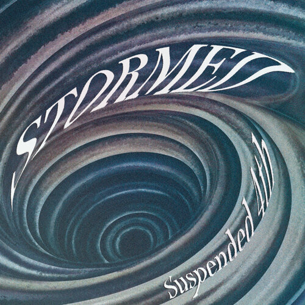
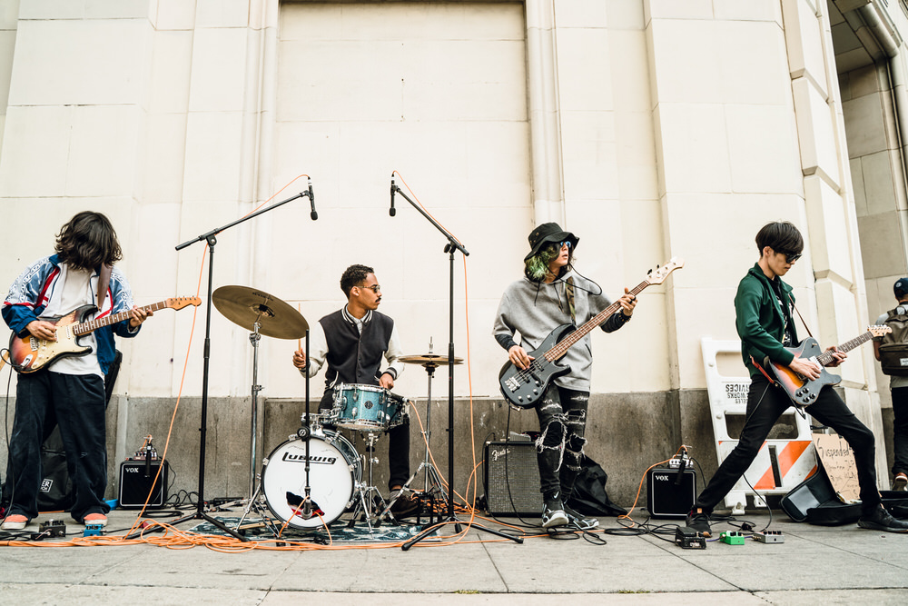

專輯

來自於名古屋的樂團，他們在名古屋街頭非常活耀，雖然不一定每個人都喜歡他們的音樂，但至少有一定的名氣。一開始的吉他的旋律配上雜雜的fuzz效果聲，會讓人瞬間被這首歌吸引住，而且他們的鼓手編的鼓也是讓人聽起來有一種熱血的感覺；等到了主唱的獨特嗓音加入，讓整首歌變得更豐富更熱鬧。Suspended 4th 的歌曲雖然骨架都非常簡單，但獨特嗓音與超有記憶點的旋律，讓他們有了一群對他們死忠的聽眾，而且他們的現場演出非常非常的有默契，應該是街頭表演所訓練出來的吧!
